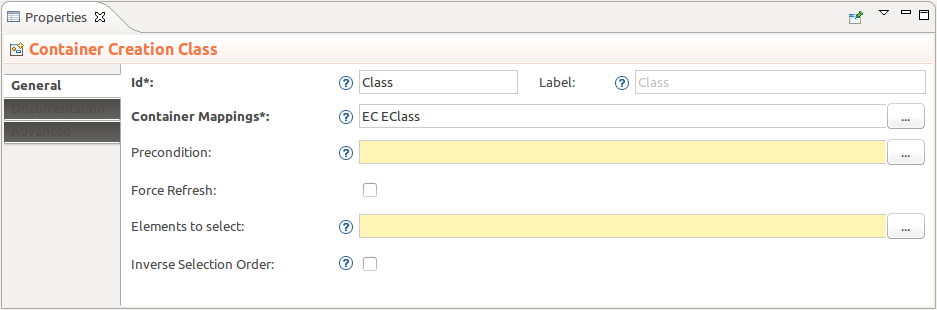

Summary: Allow specifier to choose the selected elements after tool execution.
| Version | Status | Date | Authors | Changes |
|---|---|---|---|---|
| v0.1 | DRAFT | 2015-04-15 | lredor | Initial version. |
| v0.2 | DRAFT | 2015-04-21 | lredor | Consider team review. |
| v0.3 | PROPOSAL | 2015-04-22 | lredor | Consider team review. |
| v0.4 | PROPOSAL | 2015-04-27 | lredor | Clarify variables evaluations. |
| v0.5 | ACCEPTED | 2015-07-01 | lfasani | Precise spec on interpreted expression. |
Relevant tickets:
Currently, after a tool execution, all new graphical elements are selected (in the creation order). The last created graphical element is the primary selection. The primary selection determines the available actions and the scope of these actions.
This behavior is not always the expected one. For example, just after a creation, the direct edit tool is available on the primary selection (the last created graphical element). If the direct edit tool must operate on the first created graphical element, the user must select the diagram and then select again the first created graphical element to direct edit.
The goal of this feature is to allow the specifier to choose the selected elements after a tool execution.
To allow the specifier to choose the graphical elements to select after a tool execution, some additional data are needed for tools description.
There are 2 cases:
In the first case, the specifier can only fill an expression with the list of semantic elements to select. Depending on the tool, the same semantic element can correspond to several graphical elements. In this case, all the graphical elements corresponding to the semantic element will be selected (with the same current rule: the last created element is the primary selection).
In the second case, we can easily imagine that the specifier fills an expression with the list of graphical elements to select. Indeed, if the tool also creates the graphical elements, they are accessible latter in the tool by using the instance variable name.
On the VSM side, two new fields are necessary on AbstractToolDescription:
InterpretedExpression elementsToSelect: Expression to list the elements to select after the execution of the tool. There are 4 possibilities for the list of elements returned by this expression. In any case, if the default list of elements is not empty, the list of elements returned is filtered with the default one. In case of creation tool, the default list contains new created elements so the returned list can contain at most that elements.DRepresentationElement: All this graphical elements will be selected after the execution of the tool.EObject that are not a DRepresentationElement are considered as semantic elements. All graphical elements corresponding to these semantic elements will be selected after the execution of the tool.DRepresentation: It will be considered as empty list.DRepresentationElement and non DRepresentationElement is forbidden. A such list will be considered as empty list.EBoolean inverseSelectionOrder : By default, false, the elements are selected in the order of the list or the default list. It is possible to inverse this order by setting this property to true. To be more precise, the meaning of this property depends on the value of elementsToSelectExpression:DRepresentationElement: The elements are selected in order of the list (first element is selected in first, second element is selected in second, and so on). The last graphical element of the list will be the primary selection. If inverseSelectionOrder is true, the order is reverted.inverseSelectionOrder is true, the order is reverted (the order of the list AND the order of several graphical elements corresponding to the same semantic element).DRepresentation: The inverseSelectionOrder is ignored in this context.List of variables that should be proposed in the completion:
container and containerView for a ContainerCreationDescription, element and elementView for a ToolDescriptionroot, element and container for a CreateLineToolCreateInstance operationsCreateView operationsCreateEdgeView operationsTechnically, the entry point to changes this is in org.eclipse.sirius.tools.api.interpreter.context.SiriusInterpreterContextFactory.createInterpreterContext(EObject, EStructuralFeature) and depending classes, for example in org.eclipse.sirius.diagram.business.internal.dialect.description.DiagramInterpretedExpressionQuery.getAvailableVariables().
All above changes, on the VSM side, allow the specifier to configure the expected list of elements to select. Then, new fields are needed in representations file to store this result, used later in a post commit listener (a ResourceSetListenerImpl). Indeed, the tool is not accessible in the post commit listener so these data must be stored in the current modified representation.
A new class UIState will be added in the meta-model to store this computed expression (and also the current inverseSelectionOrder). A new reference, uiState to this UIState will be added in DRepresentation. This reference is a containment reference and is transient. The class UIState allows to store several transient data in DRepresentation. It will be currently used only for this feature but we can imagine to use it in the future instead of specific singleton (ViewLocationHint, ViewSizeHint) or for copy/paste layout capability for example.
This new class has 2 fields:
List<EObject> elementsToSelect: The result of the computation of elementsToSelect interpreted expression of the tool. The expression elementsToSelect is evaluated after the execution of the tool (technically as the current refresh task: org.eclipse.sirius.tools.api.command.AbstractCommandFactory.addRefreshTask(DSemanticDecorator, DCommand, AbstractToolDescription) or org.eclipse.sirius.diagram.tools.internal.command.builders.AbstractDiagramCommandBuilder.addRefreshTask(DDiagram, DCommand, AbstractToolDescription)). The context of evaluation should «be the same as completion»: every variable proposed in the completion should be available and valued in the context of the interpreter during evaluation of the expression. If the existing variables correspond to an expression, they are not evaluated a second time, the values of these variables are already available in the interpreter.EBoolean inverseSelectionOrder: The value of the inverseSelectionOrder of the tool.The uiState will be cleaned just before the next use of it. This leads to a temporary memory leak:
uiState.elementsToSelect reference.This temporary memory leak is accepted as it will be free when the representation is unloaded.
Currently, the selection is made by SelectCreatedDRepresentationElementsListener for the diagram and not done for table and tree (see bugzilla 428545 for table and tree). The chosen behavior for tree (probably TreeUIUpdater) and table (probably TableUIUpdater) must also consider the new fields of DRepresentation as for SelectCreatedDRepresentationElementsListener.
This is a new behavior, so without modification of the VSM, there is no impact. The metamodel is changed but just with new elements.
All the new metamodel elements are in blue.
No validation rule is needed:
AbstractToolDescription.elementsToSelect can be blank (considered as empty): in this case the behavior is the current (all the created elements are selected in the order of the creation).AbstractToolDescription.inverseSelectionOrder has false as default valueUIState.elementsToSelect can be null: in this case, it is considered as empty and nothing is selected.UIState.inverseSelectionOrder has false as default valueNo migration is needed for the new elements.
The main API changes is for meta-model.
There is probably new API in org.eclipse.sirius.tools.api.command.AbstractCommandFactory to provide default access to the new fields of the tool (evaluation of the expression...).
In the Properties view of a VSM, the tool have now the new properties defined above.

Update specifier documentation and release note about this new feature.
The solution to add a new ModelOperation has not been chosen because the specifier has not really the choice. This operation is called at the end of the tool and not in the middle of other ModelOperation.